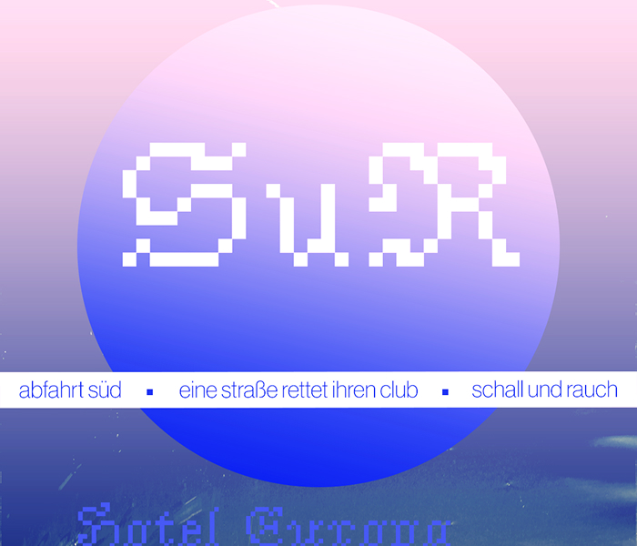
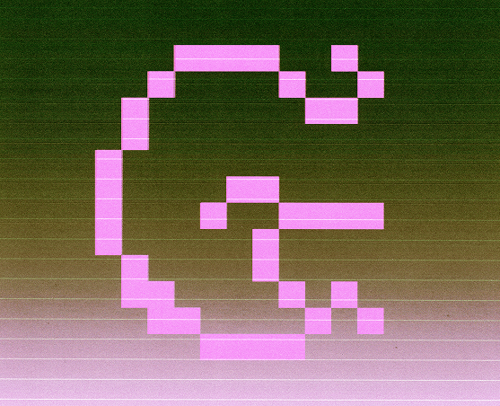

↓




Hi, na? Ich heiße Theresa, bin studierte Kommunikationsdesignerin und komme aus Aachen. Ich gestalte für Künstler*innen und Kulturschaffende. Meine Leidenschaft sind verspielte Corporate Identities und Layouts (analog und digital). Warum der Name „Kaputte Datei"? Weil ich es liebe, gestalterische Regeln zu biegen, brechen oder umzugestalten.
Und sonst so? Ich liebe Pflanzen (vor allem Zimmerpflanzen, Kräuter oder Obstbäume und -sträucher) alternativen R&B (mainly Frank Ocean), den Frühling (macht gute Laune), gutes Essen (macht auch gute Laune), Tiere (♡) und schöne Landschaften (ich werde älter, also fange ich an mit wandern und so). Designen finde ich natürlich auch super.
Im Jahr 2025 habe ich meinen Bachelor als Kommunikationsdesignerin an der FH Aachen absolviert und studiere nun im Master.
In meiner Restzeit statte ich lokale Kulturtragende, Künstler:innen und Kollektive mit außergewöhnlichen Identitäten und Grafiken aus.
Während meiner Zeit im Studium habe ich meine Leidenschaft für Editorial Design und Typografie entdeckt. Durch eine HiWi-Stelle an der RWTH habe ich mich außerdem mit Infografiken und Illustration beschäftigt. Noch dazu kam irgendwann das Fotografieren (typisch Designstudium). Und was mache ich bei meinem Job in der Agentur? Websites. Naja, ich probiere mich gerne mal an allem aus. I'll try anything once.
Am allermeisten liebe ich es, zu experimentieren. Daher brenne ich für neue Herausforderungen, crossmediales Arbeiten und interdisziplinäre Projekte!
10.2020 : Studienbeginn Kommunikationsdesign, FH Aachen
12.2022 - 09.2023 : HiWi RWTH Aachen
02.2025 : Bachelorabschluss
04.2025 - 09.2025 : Junior Designerin Yip Yips Digitalagentur
10.2025 : Beginn Masterstudium Kommunikationsdesign, FH Aachen
Theresa Richter
Kommunikationsdesignerin
Stephanstraße 2a, 52064 Aachen
E-Mail: theresa.richter.77@gmail.com
USt-IdNr.: DE456988576